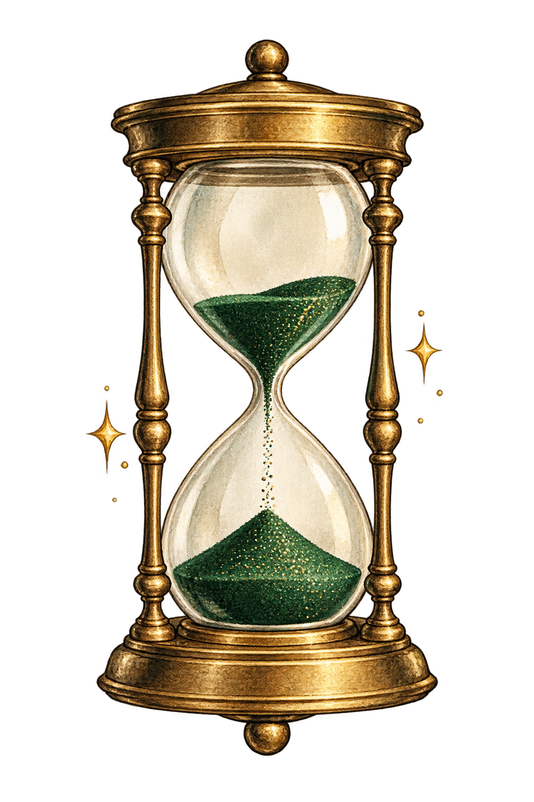

有料版の棚
ChatGPT ／ Claude ／ Copilot
今夜は、バーで
会社でAIは使えるけれど、メールの添削くらいしかしていない。そんな方のための、2時間のAI体験です。お酒を片手に「AIってこんなこともできるのか」を味わってください。
FOR YOU
会社ではChatGPTやClaude、Copilotが使えるようになった。触ったこともある。でも実際にやっているのは、メールの添削くらい。
本当はプライベートでも使ってみたいけれど、自分のパソコンに入れて何ができるのかがわからない。
この会は、そんな方が「まずは何ができるのかを知る」ための2時間です。仕事以外の暮らしやお金のことまで、AIでできることを一通り試してみましょう。
BACK BAR
このバーの棚には、お酒と一緒にAIも並んでいます。契約前の有料版と、手元のパソコンで動かせる無料モデルを、その場で試せます。
ChatGPT ／ Claude ／ Copilot
Qwen 3.8 ／ Gemma

HOW THE NIGHT FLOWS
全員でAIバーテンダーを体験し、最初の一杯を決めます。
メニューから2〜3品を選び、自分のペースで試します。
明日から使えるひとことを持ち帰ります。
FAQ
大丈夫です。まったく触ったことがない方も歓迎です。
アプリの入手から最初の起動まで一緒に進めます。
はい。ノンアルコールのドリンクもご用意しています。
RESERVATION
◯月◯日（◯）19:00〜21:00 ／ ◯◯◯
参加を申し込む →◯月◯日（◯）締切／定員になり次第終了